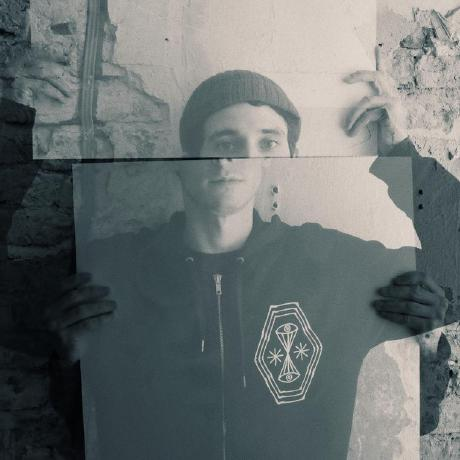

I'm Phillip Mates, a software engineer at Nextjournal
Before that I was at Nubank where I built micro-services, worked on the data platform, and was the co-maintainer of several clojure libraries related to testing: matcher-combinators, state-flow, and Midje
Academically speaking, I received a masters in Programming Languages from Northeastern University, working to establish new compiler verification proof techniques under the supervision of Amal Ahmed.During undergrad at the University of Utah I studied static analysis as a part of Matt Might's U-Combinator lab and also worked under Claudio Silva and Juliana Freire on various VisTrails related projects.